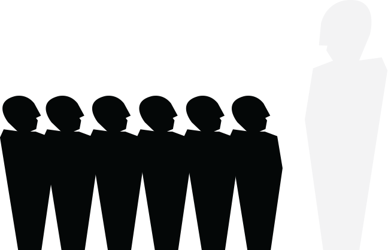
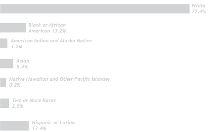
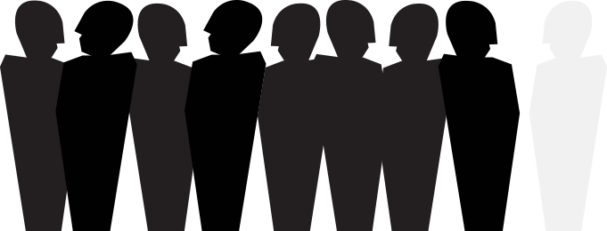
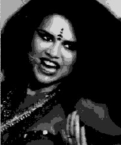
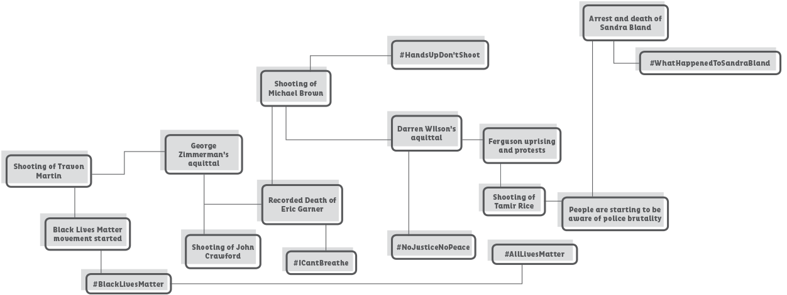

Let's break this phrase up word by word. The word “oppression” has two definitions. According to the Oxford Dictionary it means either: Prolonged cruel or unjust treatment or control or the state of being subject to unjust treatment or control. And the word “systemic” means: of or relating to a system, especially as opposed to a particular part. So, this all means that oppression exists due to a system put in place by a person(s) in higher setting than another group.
Basically, this system that exists in the United States of America and was formed around when the the time that the Americas were first colonized. This system affects any person(s) that are not racially/ethnically white. Even if you are mixed race, you are still affected by this system in some way, shape, or form.
What do the tooth fairy, and reverse racism all have in common? I'll tell you, they don't exist. Ah yes, “reverse racism”, a term coined by consertive white republicans, to inhibit the the progression of POC in the United States. This term makes an oppressed people look as if they are an oppressor when in reality, that is basically impossible. Racism is defined as a power structure, used to systemically oppress a race of people because of this thought that “my race of people is superior because of X, and your race is lesser to mine because of Y”.
You know,It's really not a hard concept to grasp.
White privilege, or white skin privilege, is this little hidden thing that has an effect on many, and most of the time, it's all unintentional. It's defined as a societal privilege that benfit white people.So, when you are born, as a white person, you are born with a specific privilege, because of your skin. This privilege, is what America's ancestry has put much pride into since the beginning of colonization of the USA. Because of this white skin pride, it's caused many societal constructs. These benefits include: white skin being the so-called “norm”, being the Western/Eurocentric beauty standard, being the ideal person for jobs etc. This is privilege isn't necessarily a bad thing, and can be used for good but ignorance/denial of this privilege is what is harmful. To deny this helps the system that puts POC, at a lower place in today's society.
What does this phrase sound like to you? Sounds bad, so it must be, right? Well you'd be correct. Cultural appropriation is this very gray area under the sun of systemic oppression because of the many factors that take place. We're going to break the phrase up in two parts again though, no worries. So “cultural” refers to something pertaining to a culture and “appropriation” is defined as: The action of taking something for one's own use, typically without the owner's permission. This is why it becomes a very gray area, permission is the key word in all of this. To be appropriative is oppressive because it detracts from the validity of what that race of people has created.Not only that, but it also perpetuates stereotypes within the community being appropriated. It's as if today's society deems it okay for the appropriator to appropriate but wrong for the creators to actually practice what they've created.
Microagressions are comments or actions, usually offensive, that are a subtle form of discrimination. These usually are directed towards a minority group, thus the racial microaggression was born. These actions perpetuate the ideas of systemic oppression and just add to the problem. These comments can be heard anywhere and are disguised with the intention of being a compliment. But they're usually insulting, like a backhanded phrase.
This is my favorite line that I've heard, ever. I love hearing this argument so much that I put it in this booklet. It's like this situation, say you fell down and the broke your leg. Someone comes up to you and tells you “Well you have a cast on now, so like you're leg isn't broken any more, right?”. Nope. Not how that works. The pain is still there and it's the same with racism. It may not be as blatant as it once was, but all of the suffering still happened.
Activism in today's society is incredibly active. Most people, specifically the activists of the BlackLivesMatter (BLM) movement have been have been utilizing social media platforms to uncover truths which have been hidden from the general public. They use many methods such as the use of tweets, hashtags, Facebook statuses, YouTube videos and many more ways.The Black Lives Matter movement started a hashtag on Twitter aptly named #BlackLivesMatter. But in response to this, someone, somewhere, decided that the hashtag wasn't inclusive enough, so the #AllLivesMatter was born. This is such a problem because of the sheer invalidation within the context of those three words. This is hashtag has no positive meaning behind it although it may sound like it does. This hashtag is used as a “non-violent” way to belittle the feelings of those who feel oppressed through police brutality, “color blindess”, and blatant racism, etc.
Of course you're not a bad person for being white. Stop making this about you! This booklet is not meant to hurt anyone's feelings or to ostracize white people. What you're feeling is white guilt which usually translates in the mind as you being called a racist. This booklet was created for the sole purpose of educating people on the very gray areas of racism and systemic oppression that no one wants to talk about. This is here to help you think about your actions and think about how to spot problems in today's society. It's also here to help you become an ally to the struggle of what it is to be a person of color in 2015 and on. You're welcome.